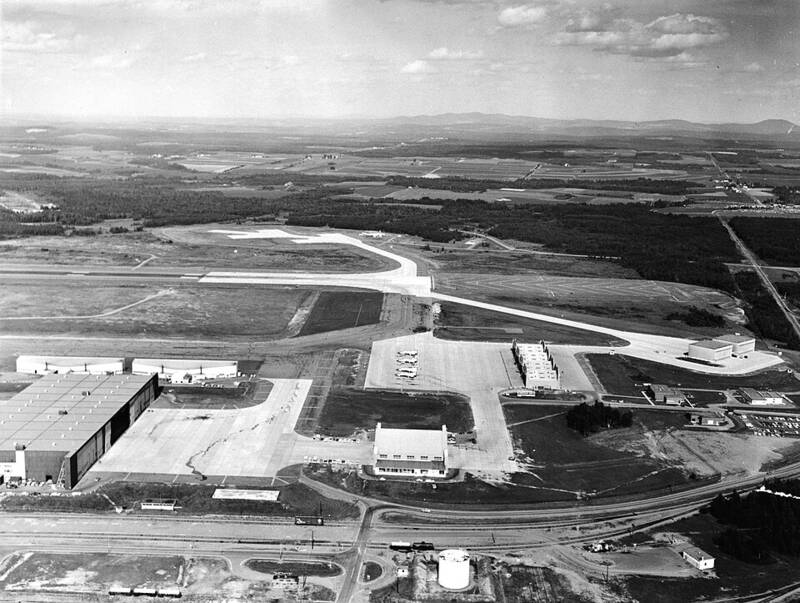

Loring overflights
Loring Air Force Base, Maine, 1975

On the night of October 27, 1975, security police at this nuclear-armed bomber base saw a low-flying craft penetrate the northern perimeter near the weapons storage area. Radar tracked it circling for about 40 minutes before it left toward New Brunswick. It returned the next night, and on October 31 and November 1 an "unidentified helicopter" was reported over the base. Messages went to the National Military Command Center and Strategic Air Command, but the craft was never identified. 1
Open in the interactive Watcher
Sources
- Loring Air Force Base Wikipedia